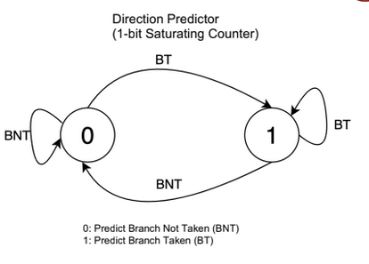
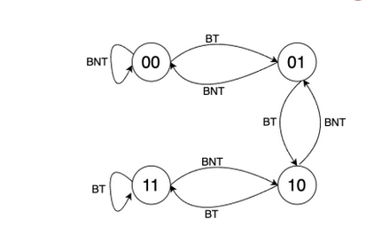

cs2600
Instruction Set
Different Instructions: x86, ARM, RISC V, MIPS.
- Programs written for one processor cannot execute on another.
- Early trend: more instructions, complex instructions.
- RISC – Reduced Instruction Set Computing
- Instructions are small and simple
- Software does not complicate operations.
How compilation happens
First the assembler converts the assembly to an object file. Here, the addresses start with 0 and are relocatable. Later on the linker links multiple such object files together and resolves function addresses, starting location, etc. using something called as a Linker Descriptor Script.
RISC V
Open source. Has 32 int and 32 FP registers. Also has XLEN variable, which is either 32 or 64 for 32-bit and 64-bit processors respectively.
There are 13 callee saved registers. 12 of them are explicitly called saved
registers, and the first one of them (s0) is the frame pointer (equivalent to
base pointer in AMD64). The 13 one is the stack pointer.
| Register | ABI Name | Description | Saver |
|---|---|---|---|
| x0 | zero | Zero always | |
| x1 | ra | Return address | caller |
| x2 | sp | Stack Pointer | callee |
| x3 | gp | Global Pointer | |
| x4 | tp | Thread Pointer | |
| x5-x7 | t0-t2 | Temps | caller |
| x8 | s0 /fp | saved / frame pointer (base pointer effectively) | callee |
| x9 | s1 | saved register | callee |
| x10-x11 | a0-a1 | Fn args/ return values | callee |
| x12-x18 | a2-a7 | Fn args | caller |
| x18-x27 | s2-s11 | Saved registers | callee |
| x27-x31 | t3-t6 | Temporaries | caller |
Maximum memory depends on the size of the address bus from the load store unit to the memory.
The caller saved registers have to be explicitly saved by the caller function in a stack frame before calling the other function. On the other hand, callee saved functions are guaranteed to stay the same across function calls and there is no need for functions to save them.
Instructions
The ones listed below are called R-type or register-type instructions.
-
add rd, rs1, rs2: add the contents ofrs1andrs2and store it inrd. Signed addition. Also has the unsigned version. Similarly, sub, and, or, xor also exist. -
mul/mulh rd, rs1, rs2: multiplies and stores the lower/upper 32 bits inrd. -
div/rem rd, rs1, rs2: stores the quotient/remainder. -
sll rd, rs1, rs2: Left shift the number inrs1by the value inrs2and store inrd. -
srl rd, rs1, rs2: Right shift the number inrs1by the value inrs2and store inrd. Zero extends. -
sra rd, rs1, rs2: Right shift the number inrs1by the value inrs2and store inrd. Sign extends.
All of these also have an immediate version where the last argument is a hardcoded literal that is 12 bits.
These are called I-type or immediate-type instructions.
-
l(b/h/w) rd, imm(rs1): loads a byte/half-word/word tord(dest. register) from*(rs1 + imm) -
l(b/h/w)u rd, imm(rs1): loads a byte/half-word/word tord(dest. register) from*(rs1 + imm). This one zero-extends on the left.
These are also I-type instructions.
The below one instruction is S-type instruction (for obvious reasons).
s(b/h/w) rd, imm(rs1): stores a byte/half-word/word to*(rs1 + imm)from the contents ofrd.
The below instruction is called B-type or branch-type instruction.
blt/bltu r1, r2, label/offset: ifr1 < r2(signed or unsigned), jump to label or symbol. Can jump to atmost 4 KiB. (13 bits with the lsb always 0, the rest are used for determining values).
The above instructions have greater than, greater than equal to variants as well. Also immediate variants of all.
Function calls
All of these can jump to at most 1 MiB as they take an immediate value of 20 bits apart from the lsb that’s always 0.
The below type is called a J-type instruction.
jal rd, imm: Jump topc + imm, and storepc + 4in registerrd.
The below one is an I-type and NOT J-type.
jalr rd, rs1, imm: Jump tors1 + imm, storingpc + 4in the registerrd. Used for function pointers.
Both of the ones below are aliases.
-
j label: alias tojal zero, label, discards the return address -
ret rs1: return to the address inrs1, if no argument is specified usera(return addres register/x1). Alias tojalr zero, rs1, 0
For function calls we also need a stack-based execution. x2 register is the
stack pointer that points to the top of the stack. Frame pointer s0 saves the
base of the stack. These mark the stack frame in the stack.
Always load and save values relative to the frame pointer.
Registers a0 to a7 are used to pass function arguments from one function to
another. These are 8 parameters. If we have more, then you need to use the
stack.
Control and status registers
-
csrrw rd, csr, rs: atomic swap values -
csrrs rd, csr, rs: atomic copy tordand set the bits that are set inrs. -
csrrc rd, csr, rs: atomic copy tordand reset the bits that are reset inrs.
Atomic means that interrupts won’t stop the entire set of operations that is
going on. If one of the operands is x0/zero, then that copying doesn’t happen.
Executing instructions
If we are using an operating system:
- Proxy Kernel is handling syscalls, mapping memory, program counter according to memory map, etc.
If we are without an operating system:
- Manually write the
.textsection to the flash memory. - Load the
.datasection to the RAM. - Set/reset the program counter to the required memory. It resets to a fixed value called as reset vector.
- Address out of range is your skill issue.
- Instruction fetched by the Instruction Pointer. 32 bits in width.
- Then it is sent to control ROM. This does not have microcodes and are instead hardcoded using combinational circuit.
Register Bank
Has all the registers and 2 muxs + 1 demux to select the register to use. There is dual porting to read two source registers at once (hence two muxes).
Program Counter
This keeps track of the next instruction to be executed. Usually incremented by 4 unless branches. It resets to a fixed value called as reset vector.
Instructions and data are fetched every rising edge of the clock and that is when the program counter is also incremented by 4. The instruction fetched is later stored in the instruction register.
The instruction register sends it to the control unit which later sends signals to whatever is responsible.
It also gets reset at interrupts to an interrupt vector and begins to consume instructions from there.
ALU
Performs arithmetic (no shit). Has the gen module before it that generates the immediate instruction from the opcode, regardless of whether it was an I-type or not.
After this, there is a 2:1 mux that has a select line coming from the Control Unit that decides whether or not the immediate values has to be selected or not, the other option being 0.
Multiprecision Arithmetic in RISCV
Multiprecision addition
.data
# data goes here
iter: .word 0x2 # number of chunks
chunksize: .word 0x4 # bytes of the chunk, in this case word
var1: .word 0xffffffff
.word 0x53535353
var2: .word 0x1
.word 0x01010101
var3: .word 0x0
.word 0x0
.section .text
.global main
main:
lw a1, iter
lw a2, chunksize
mul s1, a1, a2
xor s2, s2, s2 #i = 0
xor s3, s3, s3 #carry = 0
loop:
bgeu s2, s1, return # i < k or exit
la t1, var1 #t1 = &var1
add t1, t1, s2 #t1 = &var1 + i
lw t1, 0(t1) #t1 = var1[i]
la t2, var2 #t2 = &var2
add t2, t2, s2 #t2 = &var2 + i
lw t2, 0(t2) #t2 = var2[i]
add t3, t1, t2 #sum = var1[i] + var2[i]
sltu s4, t3, t1 #first carry
add t4, t3, s3 #sum = sum + carry
sltu s5, t4, s3 #second carry
add s3, s4, s5 #final carry
la t3, var3
add t3, t3, s2
sw t4, 0(t3)
add s2, s2, a2
j loop
return:
ret
Multiprecision subtraction
.data
# data goes here
iter: .word 0x2 # number of chunks
chunksize: .word 0x4 # bytes of the chunk, in this case word
var1: .word 0xffffffff
.word 0x53535353
var2: .word 0x1
.word 0x01010101
var3: .word 0x0
.word 0x0
.section .text
.global main
main:
lw a1, iter
lw a2, chunksize
mul s1, a1, a2
xor s2, s2, s2 #i = 0
xor s3, s3, s3 #carry = 0
loop:
bgeu s2, s1, return # i < k or exit
la t1, var1 #t1 = &var1
add t1, t1, s2 #t1 = &var1 + i
lw t1, 0(t1) #t1 = var1[i]
la t2, var2 #t2 = &var2
add t2, t2, s2 #t2 = &var2 + i
lw t2, 0(t2) #t2 = var2[i]
sub t3, t1, t2 #sum = var1[i] - var2[i]
sgtu s4, t3, t1 #first carry
sub t4, t3, s3 #sum = sum + carry
sgtu s5, t4, t3 #second carry
add s3, s4, s5 #final carry
la t3, var3
add t3, t3, s2
sw t4, 0(t3)
add s2, s2, a2
j loop
return:
ret
Multiprecision multiplication
This is WRONG!!!!
.data
# data goes here
iter: .dword 0x2 # number of chunks
chunksize: .dword 0x8 # bytes of the chunk, in this case word
var1: .dword 0x2222222222222222
.dword 0x0000000000003333
var2: .dword 0x10
.dword 0x3
var3: .dword 0x0
.dword 0x0
.dword 0x0
.dword 0x0
.section .text
.global main
main:
ld a1, iter
ld a2, chunksize
mul s1, a1, a2 #adjusting max iterations to account for chunk size
xor s2, s2, s2 #i = 0
xor s4, s4, s4 #carry = 0
outer_loop:
bgeu s2, s1, return #i < k or exit
la t1, var1 #t1 = &var1
add t1, t1, s2 #t1 = &var1 + i
ld t1, 0(t1) #t1 = var1[i]
xor s3, s3, s3 #j = 0
inner_loop:
bgeu s3, s1, inner_end # j < k or exit
la t2, var2 #t2 = &var2
add t2, t2, s3 #t2 = &var2 + j
ld t2, 0(t2) #t2 = var2[j]
mul t3, t1, t2 #lower bits of var1[i] * var2[j]
add t3, t3, s4 #add the previous carry here
mulh s4, t1, t2 #upper bits of var1[i] * var2[j] set as the new carry
la t4, var3 #t4 = &var3
add t4, t4, s2 #t4 = &var3 + i
add t4, t4, s3 #t4 = &var3 + i + j
ld t5, 0(t4) #fetch whatever the previous value in that block was
add t5, t5, t3 #add the current multiplication to that value
sd t5, 0(t4) #store the final result
add s3, s3, a2 #j = j + 1
j inner_loop
inner_end:
add s2, s2, a2 #i = i + 1
j outer_loop
return:
ret
Function call examples in RISCV
Recursive fibonacci
.data
# data goes here
fib_in: .dword 0xa #the 3rd fibonacci number
fib_out: .dword 0 #output is stored here
.section .text
.global main
main:
addi sp, sp, -0x8 #create stack frame
sd ra, 0(sp) #store return address of main
ld a0, fib_in #load the argument in the a0 reg
jal ra, fib #call the function with a0 = fib_in
la t1, fib_out #take the return value from the a1 reg
sd a1, 0(t1) #store the return value in the required place
ld ra, 0(sp) #load the return address
addi sp, sp, 0x8 #restore stack frame
ret
fib: #fib(k)
addi sp, sp, -0x20 #make the stack frame
sd ra, 0(sp) #store the return address
sd a0, 0x8(sp) #store the argument
li t0, 2 #if a0 == 1 || a0 == 2
bleu a0, t0, fib_done #leave
addi a0, a0, -0x1 #a0 = a0 - 1
jal ra, fib #fib(k - 1)
sd a1, 0x10(sp) #t1 = fib(k-1)
addi a0, a0, -0x1 #store fib(k - 1)
jal ra, fib #fib(k - 2)
sd a1, 0x18(sp) #store fib(k - 2)
ld t1, 0x10(sp)
ld t2, 0x18(sp)
add a1, t2, t1 #a1 = fib(k - 1) + fib(k - 2)
ld ra, 0(sp) #restore return address
ld a0, 0x8(sp) #restore a0
addi sp, sp ,0x20 #restore stack frame
ret
fib_done:
ld ra, 0(sp) #restore return address
ld a0, 0x8(sp) #restore
li a1, 0x1 #send value
addi sp, sp, 0x20 #restore stack frame
ret
Peripherals
They are also mapped to the memory. And properties can be changed using that memory area.
The driver can be blocking or non-blocking. If blocking, it takes up a lot of CPU power as it keeps polling the peripheral for data. If it is non-blocking, then there are interrupts then they are detected at hardware level within a clock cycle.
Interrupts
If there is an interrupt, then the program jumps to the supplied interrupt service routine and starts executing from there and returns to the OG instruction once everything is done.
Hardware interrupts are done by a bus manager like the network controller (that straight away receives a bunch of kilobytes) and use DMA (Direct Memory Access) to straight away start using the memory.
There are software interrupts (for accessing devices like IO, sockets, etc.) and hardware interrupts for, well, other stuff.
Apart from that there are exceptions as well that are raised by the CPU when buttfuckery like division by 0 happens.
All the peripherals are connected to the PLIC (Platform Level Interrupt Controller). There is also CLINT (Control Local Interrupt Timer) that gives each core timer interrupts that can be used a scheduler.
Interrupts have modes that define previlege level:
- Machine level: M mode, most privileged
- Supervisor level: S mode, OS privilege
- User level: U mode, all binaries run here
In Intel machines these are called rings.
Interrupt Handling
What caused the interrupt?
mcause has the first bit reserved for the interrupt type (interrupt or error)
and the rest 31 bits are used for indicating the subtype of the interrupt.
If the first bit is 1 then it was an interrupt else it was an exception.
To find out what peripheral caused the interrupt, the CPU uses the value given by PLIC.
Filled automatically by the hardware when an interrupt happens.
Where is the interrupt vector address?
mtvec stores the address of the interrupt vector.
If the mode value is set to 1, it is vectored. The pc is set to
BASE + 4 * cause.
If mode is set to 0, it is a direct interrupt and all exceptions set
pc to BASE.
2 and 3 are reserved for future use.
NOT hardcoded!!
Where to return to?
mepc holds the value of pc when the interrupt occured.
mret instruction loads the mepc to the pc.
What was the previous status level?
mstatus register has 4 bits that are mostly relevant to us.
MPP[1:0] stores the previous execution mode. These are the 12th and 11th LSB,
0 indexed.
- User mode: 00
- Supervisor mode: 01
- Machine mode: 11
MPIE holds the interrupt enable status in the previous mode. This is used to
determine if the previous mode had interrupts enabled for the lower privileges.
This is the 7th LSB, same scheme as above.
MIE holds the interrupt enable status in the current mode. 3rd LSB, same
scheme.
Nested interrupts
To enable a nested interrupt, copy the data from mepc, mcause and mstatus.
mie register enables interrupts in machine mode if set. It is set to zero at
the start of the interrupt to make sure no other interrupts disturb the copying
of the data during a nested interrupt.
- 11th bit for external/DMA interrupt.
- 7th bit for timer interrupt.
- 3rd bit for Software interrupt.
These are 0 indexed LSBs.
Pending Interrupts
mip register holds the important bits for any interrupt that wasn’t executed
in between an instruction.
Bit scheme is the same as above.
Virtual Memory Addressing
We introduce a paging unit between physical memory and the CPU, which is unique for every process.
RAM is split into multiple page frames (usually 4 KiB). The virtual memory is also split into multiple chunks of 4KiB size. These two chunks are then mapped in some fashion which is stored in the process page table.
While scheduling, the program has an active page table that is maintained during the program’s runtime. In some cases, pages from multiple programs are loaded simultaneously to the memory.
Demand Paging
Virtual memory takes advantage of the fact that not all blocks need to be loaded at once for the program to be executed. Hence, the paging table also has a value called present bit that tells you if the page is present in the CPU or not.
If a page is not loaded when it was supposed to be, the program raises an interrupt called page fault exception. There is a page fault exception handler that takes care of loading the page and fill the page table. It may remove a page frame of some other process if necessary.
There is another bit that keeps track of whether or not a page needs to be written back to swap because of data updation. If the dirty bit is set to 1, we write stuff back to the swap. Else we don’t to save memory operations.
There are also protection bits for each page to indicate the permissions of each page. These are used for maintaining stuff like the code being readable, stack being non-executable, etc.
Usually there are 2 level paging, where one table has the address of another sub-table and there is an offset that are used together to obtain the memory.
Shared memory
If two programs have the same page frame, then they share the same memory physically that lets them have a common shared memory (eg. glibc sharing, VDSO in linux). You can also duplicate a page within a program by pointing two blocks to the same frame.
2 level paging
The virtual address has the first 10 bits as offset from the page table base register. This gives you the exact address of the page table from the page directory. The next 10 bits store the offset from the base of the page table. From this value the first 22 bits of the physical address are obtained. The last 12 bits for both virtual and physical address are the same. This scheme supports page directory sizes of 4KB and 4 MB.
For the satp register (the page table base register), the MSB will indicate that translation is on or not. The next 9 bits are just meant for address space separation for different processes. The next 22 bits hold the address of the first level directory of the page translation. These 22 bits have to be left shifted by 12 bits (which happens to be the page size as well) to get a 34 bit address that points to the base directory.
The page table format is as follows:
| PPN[1] | PPN[0] | RSW | D | A | G | U | X | W | R | V |
|---|---|---|---|---|---|---|---|---|---|---|
| 12: physical page number | 10: physical page number | 2: reserved for OS | 1: Dirty (0 for non-leaf), used for swapping | 1: Accessed (0 for non-leaf) There are two somewhat complicated schemes that juggle how the page is updated and whether or not it is still valid. | 1: set to check whether the mapping is valid or not for all virtual address spaces, usually only used by the OS | 1: User mode | 1: execution bit | 1: write bit | 1: read bit | 1: valid bit, it is used for caching in TLBs. Implementations can cache both legally but ideally only if valid bit is 1, the translation is valid. |
The PPN[1] + PPN[0] of the first level are used to get the address of the second level table. This too, has to be left shifted by 12 bits. Once we get that, we use the PPN[1] + PPN[0] to get the first 22 bits of the 34 bit physical page address. The last 12 bits are the offset bits from the OG virtual page address. 34 bits imply that a total of 16 GB is addressable and supported in 32 bit RISCV architecture.
For a non-leaf page table entry, all three of the read-write-execute bits are 0. If a page is writable it also has to be readable as well.
3 level paging
This is done for 64 bit architecture. This comes in two variants:
- 39 bit addressing
- 48 bit addressing
The satp for this scheme has 4 bits for mode specification and 16 bits for address space separation. The rest is used for the base address of the top level page directory. Once again, left shift by 12 bits before getting the root directory’s address. The first 4 bits are:
- 0 if virtualization is off.
- 8 if it is 39 bit scheme.
- 9 if it is 48 bit scheme.
- Others are reserved.
39 bit
This scheme can support page table directories of sizes 4KB, 2MB, 1GB. The most significant 25 bits are unused. There are a total of page table entries . Once again, last 12 bits are the same.
The page table entry is as follows:
| Reserved | PPN[2] | PPN[1] | PPN[0] | RSW | D | A | G | U | X | W | R | V |
|---|---|---|---|---|---|---|---|---|---|---|---|---|
| 10: reserved for future use | 26: physical page number | 9: physical page number | 9: physical page number | 2: reserved for OS | 1: Dirty (0 for non-leaf) | 1: Accessed (0 for non-leaf) | 1: set to check whether the mapping is valid or not for all virtual address spaces, usually only used by the OS | 1: User mode | 1: execution bit | 1: write bit | 1: read bit | 1: valid bit |
Once again, all of PPN[2] + PPN[1] + PPN[0] bits will be used to find the page directory beginning in the subsequent levels. Also, left shift by 12 bits before adding the offset from the VA.
TLBs
These are special memory banks that store the frequently used mappings of virtual memory and physical memory.
There are three types of TLB-cache combinations:
Note: There is only one TLB for our purposes. So only one of the cache will have VIPT scheme. The rest is determined according to whether the level of the TLB is lower or higher.
Physically indexed physically tagged
In this case the virtual address is first looked up in the TLB. If the TLB leads to a miss, it then goes on to check the page tables which are separate memory operations of their own.
If the TLB gives a hit, then it goes on to check the cache, which is again a hit or a miss.
This is slow as the cache needs to wait for the TLB to finish its operations and then proceed further.
This is useful for low level caches though since they are rarely accessed. There is no overhead of translations in case of TLB misses as it was already translated for VIPT. Basically TLB misses will be fewer in this case.
Virtually indexed physically tagged
Used for L1 /L2 cache. TLB calculates the physical address to get the tag for the cache. the index is obtained from the virtual address.
Virtually indexed virtually tagged
If only virtual addresses are used to calculate both the index and the tag. This is used if L2 is using the TLB for VIPT and L1 has entirely VIVT.
Von Neumann Architecture
Fetches the memory into various kinds of buffers to speed up memory fetch by CPU.
Caches
Each core has separate L1 cache for instructions and data. L2 cache is common for both and mostly per-core (can also be shared across multiple cores). L3 cache is shared across all the cores.
Registers
Apart from this there are also registers next to the ALU to speed up computation . More can be slower or faster depending on the number. More means lesser loads and stores. More also means longer routes (more time for pulse to travel) and clock cycle logic to choose the register become slower.
RAM memory
- Has capacitors.
- Capacitors discharge over time hence needs to be continuously powered and recharged.
- Take time to charge and discharge, which creates bottlenecks for CPU.
DRAM
Flow of types through time:
- SDRAM: Synchronous DRAM
- RDRAM: Rambus (company)
- DDR DRAM: Double data rate - over here both rising and falling edges will have actions.
DIMM chips: Dual inline memory modules
There are two ranks, with 8 chips for each. One rank is on one side. Each bus activates all the 8 chips at once.
One layer/rank/side is only for data and the other is only for instructions and commands. There is another bus that chooses the rank.
This is more efficient as one DRAM chip can be held using 8 pins only. This reduces size and number of pins (they are costly).
However, this activates all the 8 DRAM chips at once when we don’t need to, so it is power inefficient.
For each DRAM cell, there are 8 banks, each of which has 8 arrays. Each array has 64 bits, however the data is stored so that all the 8 arrays store a bit each for any byte.
Each array has a RAS (row access strobe) and a CAS (column access strobe). There are 8 rows and 8 columns. Each row has 8 bits, but not from the same byte. Those are parallel.
Each RAS has selects a row and each CAS selects a column to fetch a bit. All the 8 bits from each of the array combine to form a byte. Therefore a bank stores 64 bytes but in parallel.
In each DRAM chip, at one time, only one bank works. The index of the bank is the same for all the chips.
Each bank sends out a byte (we’ll talk about bursts later).
It takes 9 bits to address a bit in DRAM. 3 for the array (8 in a bank), 3 for the row, and 3 for the memory.
Steps for accessing a bit:
- Row address sent through RAS. Activates the entire row.
- All the charge in the row stored in the Sense Amplifier.
- CAS selects the bit and rest is sent back for recharging the capacitors.
Step 1 is the slowest. To improve that:
Store multiple bits after step 2 in a buffer. This is called a burst.
Burst sizes:
- DDR2: 4 bytes
- DDR3: 8 bytes
- DDR4: 16 bytes
The said buffer still sends out 8 bytes in 8 cycles. So, it takes 8 cycles for 1 burst. So a burst sends out 8 bytes per bank. This is stored in the row buffer below the bank. Each DRAM chip uses one bank at a time. There are 8 DRAM chips, so for a burst of 8 bytes, the total data sent in a burst is 64 bytes.
To improve upon it further, we do bank interleaving. How this happens is:
| T0 | T1 | T2 | T3 | T4 | T5 |
|---|---|---|---|---|---|
| read req | read burst | recovery | |||
| read req | read burst | recovery | |||
| read req | read burst | recovery | |||
| read req | read burst | recovery |
In the above each row is a separate bank. This approach always keeps the data bus saturated.
DRAM refresh happens at bank level and requires all the energy to send the charge back from the Sense Amplifier that is right before the column access strobe back to the row from which the bits were fetched as we technically discharged the capacitor to get the charges.
Row hammer attack: When you activate rows that have one row in between such that the row in between changes values due to EM fields. Saltanat’s work
EDIT: I’ve been lied to. She works on TEEs for legacy applications.
Cache
Uses 6 transistors and is much faster than DRAM but also much costlier. This is called an SRAM cell.
Each memory line in DRAM is mapped to a memory line in the cache. It is usually 32 bytes or 64 bytes per cache line.
Direct Memory Mapping
If there are L cache lines and A lines in the main memory, then the k’th line is mapped to k mod L.
We have tag bits in the address, that are used to identify whether the addresses match or not.
If the addresses don’t match, we have a cache miss and we fetch the bytes from the DRAM chip again.
Example:
Assume a cache with 1024 cache lines -> 10 bits for indexing the line.
Cache line size is 1 word (4 bytes) -> 2 offset bits within the word.
Address size = 64 bits => tag size = 64 - 10 - 2 = 52 bits.
This is the 64 bit address.
Now for the cache line size
| valid | Tag | data |
|---|---|---|
| 1 bit | 52 bits | 32 bits |
The valid bit checks if the cache line is valid or not. Can be invalidated due to concurrency.
The tag bits of address and the cache line are XORed to check if it’s the same. If same, it is a hit. Then valid bit is checked. Finally data is fetched and the offset is used to get the exact byte (if it is byte addressable).
Miss penalty
This is the time taken to fill a cache line when there is a miss. There are two ways to lessen the miss penalty:
- Early Restart: The cache is filled sequentially like always but as soon as the required word/byte is written to the cache it is sent to the CPU to work upon. This is especially useful for instructions as they are mostly used in sequence.
- Critical Word First: The word that is required atm is the one that is fetched first and sent to the CPU and the rest is fetched in the background. This is helpful for data as that is mostly random access.
Writing back to memory
- Write through: Write to cache and DRAM both. Very slow since direct cache writes take a long time.
- Write buffer: Write to DRAM using a buffer where writes are queued. In the meantime the cache is also updated and the processor can continue to function as usual. If the cache line is flushed, then there is no need to be bothered as the write will be written by the priority queue before it is recalled.
- Write back: In this the cache line is written back to the DRAM when flushed.
Cache thrashing
When the same cache line is used for all the operations, it is flushed repeatedly and is slow while all the other cache lines are just idle. This can occur if you are iterating through every k’th step. To counter this, two other schemes were used.
Fully associative Cache mapping
The entire address is used for tag bits. Apart from that any memory block in DRAM can go anywhere in the cache. Now cache hits have become slower due to the necessity of looking up all the cache lines. However this reduces cache thrashing massively. To improve upon the lookup times, we use set associative cache mapping.
Set associative Cache mapping
Tradeoff between hardware size and cache misses. A block of memory can be mapped to any cache line in a set of cache lines. If there are S cache sets, then a block A gets mapped to any cache line in A mod S.
Let there be 32 KB of cache with each line being 64 byte. Hence bytes with bytes per line. So there are lines in total.
If the cache is 8-way set associative, then there are cache sets.
Now the least significant 6 bits are used for offset mapping for the bytes of the cache line. The next 6 bits are used for identifying the set. The rest of the bits are tag bits.
Split and Unified L1 Cache
-
Split: leads to better performance since instruction and data can be fetched independent of each other. However, has the drawback that instruction cache is used much more frequently than data cache.
-
Unified: Leads to better utilization of cache resources.
Processor Pipelining
One instruction consists of mutiple things like instruction fetch (IF), instruction decode (ID), register read (RD), execute (EX), data access (DA), write back (WB). The minimum clock cycle time will be the largest instruction consisting of all of these.
Instead, we make the clock cycle the largest of these individual actions. We can do that because we add buffers in between the processor everywhere.
This makes the clock cycle lower. We can also layer multiple clock cycles from different instructions now because they may not depend on each other. What happens they do? Problems.
Out of order writeback problems
Suppose instruction A has 5 pipelines and instruction B has 3 pipelines and B was executed right after A. Then before A is over, B should have had its write back into the registers. If an interrupt happens while B was over but A wasn’t, then when we return from the interrupt B will also be executed for the second time and this can lead to potentially wrong values being stored in the registers.
Pipelining hazards
There are 3 types: structural, data and control
Structural Hazards
Take the unified L1 cache.
| clock cycle 1 | clock cycle 2 | clock cycle 3 | clock cycle 4 | clock cycle 5 | clock cycle 6 | clock cycle 7 | clock cycle 8 | clock cycle 9 |
|---|---|---|---|---|---|---|---|---|
| IF1 | ID1 | EX1 | DA1 | WB1 | ||||
| IF2 | ID2 | EX2 | DA2 | WB2 | ||||
| IF3 | ID3 | EX3 | DA3 | WB3 | ||||
| IF4 | ID4 | EX4 | DA4 | WB4 | ||||
| X | X | IF5 | ID5 | EX5 |
The X denotes that IF5 cannot happen because DA2 and DA3 are already occupying the bus. Hence split L1 cache == better.
Data Hazards
| instruction | cycle 1 | cycle 2 | cycle 3 | cycle 4 | cycle 5 |
|---|---|---|---|---|---|
| add t2, t0, t1 | IF1 | ID1 | EX1 | DA1 | WB1 |
| add t4, t2, t1 | IF2 | X | X | ID2 |
Stalls occur because of dependencies in data.
Other examples:
- Write after read: when a later write writes before an earlier read.
- Write after write: when a later write writes before an earlier write.
- Read after write: when it reads the earlier value instead of the later one.
Mitigations include:
- instruction reordering: has to be done by the compiler but can also be done by the processor although it complicates hardware.
- Operand forwarding: once data is in buffers forward the data from the buffers to the next instructions before writing to the registers.
Control Hazards
Branch instructions: Branch condition outcomes are only known at execution time.
Simple solution: Stall until execution time.
Slightly better but complicated solution: Move the check to decode stage. Eg. XOR for equality.
This removes the stall in case the branch was not taken but if it was taken then the buffer has to be flushed and the later instruction fetched.
This can be accomplished using simple counter structures known as branch predictors.
Eg:


There are many other methods of predicting branches.
Branch Predictors
It has two buffers, a direction predictor and a Branch Target Buffer.
The branch target buffer is a cache that has entries in the format pc:jump for
every single pc value possible. That is possible pc values. In the
first invocation it actually stalls, calculates and loads the address. In
subsequent invocations it just reads it off from there.
The direction predictor is also a table of sorts that has one of those counters
for every single pc. Each time a branch is encountered, you fetch the counter
value and predict accordingly. And later on update the result in the counter.
This is good for single branches like loops and if-else. However in case of nested branches performance can be improved by using something called as a GShare.
A global share history buffer register is a shift register that stores the
values of the previous 32 branches. When we want to choose the index for the
direction predictor, we first XOR pc with the gshare value and then use it.
The branch target buffer indexing remains the same.
When we want to update the counter, we update both the counter and the gshare. We update the original counter, and then push back the bit in gshare.
May be nice to watch this talk by Fedor Pikus.
Superscalar Pipelining
Basically scalar pipelines but in parallel. They are called s-issue pipelines.
An s-issue pipeline can execute s instructions in parallel.
On the other hand, there are diversified pipelines that can have multiple different execute stages in parallel. This is because some of the execute stages will hog more pipelines. Like Store instructions or floating point operations.
Unlike the buffers in single pipeline processors, superscalar pipelines are multi-entry and multi-exit in nature. We can also have instructions leaving the buffer out of order except for one special buffer called the reorder buffer.
Before the parallel execution stages in a dynamic pipeline, There is a dispatch buffer that takes the entries from the Istruction Decode stage. Till now evreything was in order.
From the dispatch buffer things can either go in order or out of order depending on the execution time of the pipeline taken. Once the pipeline is completed the intermediate results are stored in the reorder buffer.
The reorder buffer may have to be significantly larger than the other buffers because situations may arise where there is a significant number of write backs waiting for an incomplete instruction to complete.
For Eg.
Suppose floating point op takes 5 clock cycles in execution stage and add takes 1 clock cycle. We can see that before the second floating point operation is over the 4 adds will be done. In a 3-issue processors this exceeds the maximum look-ahead you usually needed to have and therefore the reorder buffer must be significantly larger than the other buffers.
Stages of a superscalar pipeline
-
Instruction Fetch (IF): If s-issue then fetch s instructions at once. Increments accordingly.
-
Instruction Decode (ID): Unlike scalar processors, these decode instructions do not read the register contents. They also identify dependencies between isntructions.
-
Instruction Dispatch: This is done based on the availability of the ALU pipeline and the order in which the instruction Decode had reordered along with availability of the operands.
Dispatch buffer can be a single continuous buffer or split into multiple buffers.
PROS of singular: Better utilization of resources as stalls cannot happen that easily because the area of the buffer one type of instruction take isn’t fixed.
CONS of singular: Makes hardware much more complicated as buffers now need to be multiported. This is also very bulky as it is kinda fully associative cache.
PROS of distributed: Simple hardware. Single ported multi entry buffers. Only one type of instructions are there.
CONS of distributed: There may be more stalls now as one branch buffer may not have sufficient space to execute.
Hybrid is also possible. Intel does that.
-
Execution Stage (EX): Can be utilized by having specialized hardware for certain operations. Also supports SIMD. This takes the addresses of 3 buffers that have some fixed length and performs the operations in parallel across the entire buffer at once in one clock cycle. This is a pipeline in and of itself.
-
Instruction Completion and Retiring (WB): There is a reorder buffer. This waits for the instruction results to come up to pack them in order. This is necessary to prevent the problems of interrupts.
For store instructions, they are retired only when the data is written back in the cache.